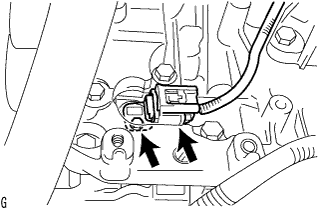
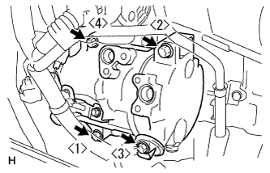
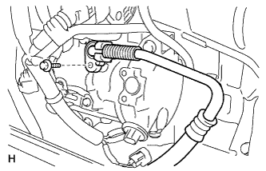
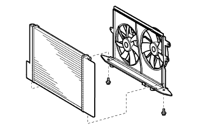
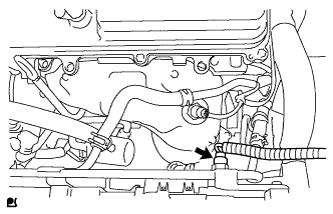
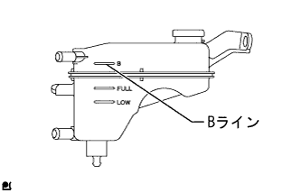
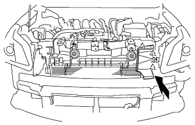
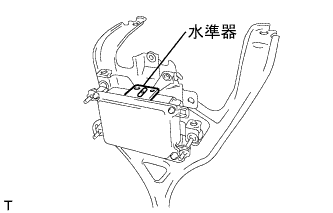
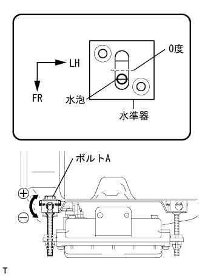
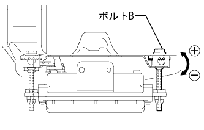

Crankshaft Position Sensor (2GR-FE) Installation |
| 1. Install Crankshaft Position Sensor |
 |
Install the crank position sensor with the bolt.
Connect the connector to the crank position sensor.
| 2. Install Cooler Compressor w/ Magnetic Clutch Assembly |
 |
Install the cooler compressor w/ magnetic clutch assembly with the 4 bolts in the order shown in the illustration.
| 3. Install Discharge Hose Sub-assembly |
 |
Remove the vinyl tape wrapped around the connecting part of the discharge hose.
Sufficiently apply compressor oil (ND-OIL8) to a new O-ring and the fitting surfaces of the cooler compressor w/ magnetic clutch assembly.
Install the O-ring to the discharge hose.
Install the discharge hose to the cooler compressor w/ magnetic clutch assembly with the bolt.
| 4. Install Suction Hose Sub-assembly |
 |
Remove the vinyl tape wrapped around the connecting part of the suction hose.
Sufficiently apply compressor oil (ND-OIL8) to a new O-ring and the fitting surfaces of the cooler compressor w/ magnetic clutch assembly.
Install the O-ring to the suction hose.
Install the suction hose to the cooler compressor w/ magnetic clutch assembly with the bolt.
 |
Engage the clamp.
Connect the connectors.
| 5. Fan Shroud Installation |
 |
Install the fan shroud to the radiator assembly with 2 bolts.
Using the clamps, connect the 2 oil cooler hoses to the radiator assembly.
| 6. Install Radiator Assembly |
 |
Install the 2 radiator support lower cushions.
Install the radiator assembly together with the fan shroud to the vehicle.
Install the cooler condenser assembly to the fan shroud.
| 7. Connect Thermistor Assembly |
 |
Install the thermistor assembly with the clip.
| 8. Connect Wire Harness |
 |
Connect the cooling fan motor connector and 2 wire harness clamps.
| 9. Oil Cooler Outlet Hose NO.1 Installation |
 |
Slide the clamp and disconnect oil cooler outlet hose No.1.
| 10. Oil Cooler Inlet Hose NO.1 Installation |
 |
Slide the clamp and disconnect oil cooler inlet hose No.1.
| 11. Connect Radiator Hose NO.1 |
 |
Connect the radiator hose NO.1 with 2 clamps.
| 12. Connect Radiator Hose NO.2 |
 |
Connect radiator hose NO.2 with the clamp.
| 13. Connect Water Bypass Hose |
 |
Connect water bypass hose No.1 and water bypass hose No.3 with the 2 clamps.
| 14. Install Fan Shroud NO.2 |
 |
Install fan shroud No.2 to the radiator assembly with the 2 bolts.
Attach the 2 horn assembly connectors to fan shroud No.2 with the 2 clamps.
| 15. Install Radiator Support Assembly |
 |
Install the radiator support assembly with the 4 bolts.
 |
Connect the 2 horn assembly connectors.
| 16. Install Hood Lock Assembly |
 |
Install the hood lock assembly with the 3 bolts.
 |
Attach the hood lock control cable assembly to the 2 clamps.
| 17. Inspect Hood Sub-assembly |
| 18. Adjust Hood Sub-assembly |
| 19. Connect Water Bypass Hose |
|
Connect water bypass hose No.1 and water bypass hose No.3 with the 2 clamps.
| 20. Add Coolant (Toyota Genuine Super Long Life Coolant) |
Close the radiator drain cock plug.
Close the cylinder block drain cock plug.
 |
Fill coolant of the specified concentration up to the B line of the radiator reserve tank.
After installing the reservoir tank cap, warm up the engine until the thermostat opens. (A)
After warm-up, repeat the cycle of 3000rpm engine speed for 5 seconds ←→ idling for 45 seconds 8 times or more (7 minutes or more). (B)
Stop the engine and wait until the coolant cools down, and if the level is below LOW, add coolant of the specified concentration through the filler again and adjust it to between FULL and LOW. (C)
Repeat steps (A) to (C) until the coolant level in the radiator reservoir tank stops dropping.
When the level stops dropping, add coolant of the specified concentration through the filler again to adjust the coolant level in the radiator reservoir tank to between FULL and LOW.
| 21. Inspect for Coolant (Toyota Genuine Super Long Life Coolant) Leaks |
 |
Fill the radiator with coolant and install a radiator cap tester.
Warm up the engine.
118kPa{1.2kgf/cm2Pump it to } and check that the pressure does not drop.
| 22. Install Radiator Side Cover RH |
 |
Install the radiator side cover RH with the 2 clamps.
| 23. Install Radiator Side Deflector LH |
 |
Install the radiator side cover LH with the 3 clamps and guide.
| 24. Millimeter Wave Radar Sensor Bracket NO.1 Installation (w/ Cruise Control (w/ Radar Cruise)) |
 |
Temporarily install the millimeter wave radar sensor bracket with the 4 bolts.
Fully tighten the bolts in the order A, B, C, D.
| 25. Millimeter Wave Radar Sensor Assembly Installation (w/ Cruise Control (w/ Radar Cruise)) |
 |
Temporarily install the millimeter wave radar sensor assembly with the 3 bolts.
Fully tighten the bolts in the order A, B, C.
Connect the connector.
| 26. Install Front Bumper Assembly |
Connect the connectors.
 |
Engage the 8 claws (4 each on LH/RH).
 |
Install the front bumper assembly with the 5 clips, 2 bolts and 6 screws.
 |
Install the pin hold clip.
| 27. Install Radiator Grille Protector |
 |
Install the 2 radiator grille protectors.
| 28. Install Engine Under Cover NO.1 |
Install engine under cover NO.1 with the 6 bolts and 7 clips.
| 29. Install Engine Under Cover |
Install the engine under cover with the 4 bolts and 4 screws.
| 30. Install Battery |
Install the battery to the vehicle
Install the insulator.
 |
Connect the current sensor connector.
 |
Install the battery clamp with the bolt and nut.
Connect the battery positive terminal with the nut.
| 31. Charge Refrigerant HFC-134a (R134a) |
Evacuate the system using a vacuum pump.
Charge with refrigerant HFC-134a (R134a).

| 32. Connect Battery Negative Terminal |
| 33. Warm Up Engine |
| 34. Install Radiator Upper Air Deflector |
|
Install the 2 radiator grille protectors.
| 35. Install V-bank Cover Sub-assembly |
 |
Engage the 3 clips to install the V-bank cover.
| 36. Setting Procedure When Disconnecting/Reconnecting Battery Terminal |
)| 37. Inspect for Refrigerant Gas Leaks |
After charging the refrigerant gas, inspect for refrigerant gas leaks using a halogen leak detector.
| 38. Millimeter Wave Radar Sensor Assembly Adjustment (w/ Cruise Control (w/ Radar Cruise)) |
 |
Pre-adjustment Work
Unload all luggage from the vehicle.
Leave only the standard tools and spare tire in the trunk.
Adjust the tire pressure to the specified value.
Reduce the remaining fuel to less than 15L.
Vertical Adjustment
Remove dust and oil from the level shelf of the millimeter wave radar sensor assembly.
 |
Place the dedicated level in the center of the level shelf of the millimeter wave radar sensor assembly.
 |
Using a screwdriver, turn vertical adjusting bolt A of the millimeter wave radar sensor assembly to adjust so that the bubble is on the red line of the level.
| Vertical Adjustment |
| 1 turn of the screwdriver moves it approximately 0.12° |
 |
SST (Reflector) Height Adjustment
Set SST (reflector) at a height of 70cm from the ground.
SST (Reflector) Setting
Hang a pointed weight from the center (emblem center) of the front and rear bumpers of the vehicle, and accurately mark the center positions on the floor surface.
 |
Make a mark 5m ahead of the vehicle on the line connecting the 2 front and rear points.
Set SST (reflector) at a position shifted 12mm to the right of the vehicle from the marking position.

Beam Axis Adjustment
Connect SST (TaSCAN) to the vehicle.
Turn IG ON.
Turn the cruise control main switch ON.
 |
On the screen, select "Work Support" → "Radar Cruise" → "Millimeter Wave Radar Beam Axis Adjustment" in that order.
Follow the screen instructions and press the "Start" button.
Horizontal Adjustment
 |
Read the current angle deviation.
 |
Based on the beam axis deviation measurement result, use a screwdriver to turn horizontal adjusting bolt B of the millimeter wave radar sensor assembly to adjust it.
| Horizontal Adjustment |
| 1 turn of the screwdriver moves it approximately 0.05° |
 |
To reset the driving learned value, cover the left half of the sensor with aluminum foil, etc. (a metal object that blocks radio waves). (For approximately 10 seconds)
 |
Press the "Complete" button to end the beam axis adjustment mode.
Disconnect SST (TaSCAN) from the vehicle.
Recheck Vertical Adjustment
Place the dedicated level in the center of the level shelf of the millimeter wave radar sensor assembly.
Using a screwdriver, turn vertical adjusting bolt A of the millimeter wave radar sensor assembly to readjust so that the bubble is on the red line of the level.
| Vertical Adjustment |
| 1 turn of the screwdriver moves it approximately 0.12° |
| 39. Road Test |
Road Test
On a straight road with 1 or more lanes in each direction where safety can be confirmed and visibility is good, drive at a vehicle speed of 30km/h or more near the center of the lane, parallel to the lane.
On a straight road, when passing an oncoming vehicle with no danger of collision, check that the master warning does not illuminate, the buzzer does not sound, and "BRAKE!" is not displayed on the combination meter display.
If it is displayed, adjust the millimeter wave radar sensor assembly again.